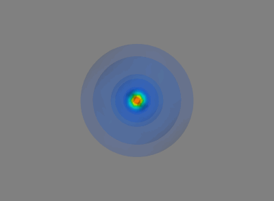

Hi! I'm Stephen.
I'm a 20 year-old student, scientist, designer, and tinkerer studying biomedical engineering at Boston University. I love Python, science communication, computer-aided art and design, synthetic biology, and biomedical imaging.
Right now, I'm working on visually engaging models of quantum atoms and a series of artistic genetic simulations that will soon depict molecular abiogenesis.
You can get in touch with me on Twitter or Linkedin. Please email me with any inquiries, or for a resume!
Thanks for visiting my (very much unfinished!) website. You can check out the source on my GitHub.
PORTFOLIO
Classic probability-density solutions to the wave equation for the hydrogen atom, plotted and animated using Mayavi.
While brushing up on 3D SciPy visualizations, I played around with plotting quantum atoms. Inspired by my fascination with the quantum world and its aesthetics, I've taken to plotting both classic solutions and more complex approximations from electron field theory by way of computational chemistry.
The goal of this work is to produce an educational flick about quantum water with as much physically accurate information as possible. The animation will hopefully feature depictions of cool stuff like the Grotthuss mechanism and electron localizations in various hydrogen bonding configurations.
Classic probability-density solutions to the wave equation for the hydrogen atom, plotted and animated using Mayavi.
While brushing up on 3D scipy visualizations, I played around with plotting quantum atoms. Inspired by my fascination with the quantum world and its aesthetics, I've taken to plotting both classic solutions and more complex approximations from electron field theory by way of computational chemistry.
The goal of this work is to produce an educational flick about water with as much physically accurate information about quantum water as possible. The animation will hopefully feature depictions of the Grotthuss mechanism and electron localizations in various hydrogen bonding configurations.
In getting my start with Pygame, I created a simple 2D physics engine from scratch, in which particles can resolve simple collisions with one another. The particles have mass and size as well as charge, which produces a pseudo-coulombic attraction between particles of opposite flavors. There's also a bit of drag.

I was interested in the crystal-like structures forming due to the coulombic forces I bestowed upon my particles, so I went a step further and introduced a bonding mechanism. In the universe shown below, the particles form bonds with one another upon contact and break their bonds if they're stretched too far apart.

I then set my sights on giving my particles more interesting, life-life properties. I gave one particle an unquenchable thirst for the others, and an energy level which it used to boost itself towards its nearest victim. Below, this energy level runs out when the cannibal particle goes hungry.

After watching my dumb-but-hungry particle flit about the screen awhile, I started to imagine a universe full of organism-like particles, each with their own properties; competing, collaborating, reproducing, and evolving in the primordial soup.
Ultimately, I want to set up a universe for my particles where they can die and/or reproduce, generationally shuffling around values. Their genomes will contain properties such as favorite flavor of resource; who or what they choose to bond with or eat; how frugal they are about spending their resources to move or divide, and the geometric strategies they use to do these things.
I'm working on setting up a genetic universe that exhibits emergent complexity: the rules of the game will produce more complex automata than those present initially!

Above, particles make the tough call whether to move or divide, and (rather poorly) pick whether to spend resources moving towards their nearest food source or the food most inline with their current heading. Their short-lived children have slightly different criteria for these decisions!
Eventually, I'll clean up my physics toolbox and start displaying my universe in a game engine, or maybe Blender. You can check out the code I've written so far here.


STEPHEN TUCKER